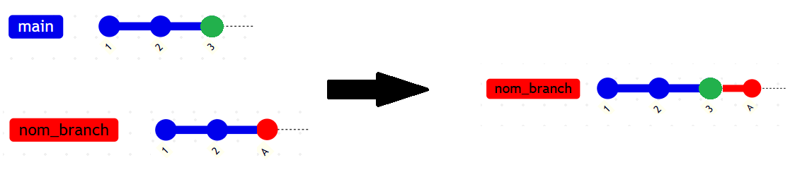
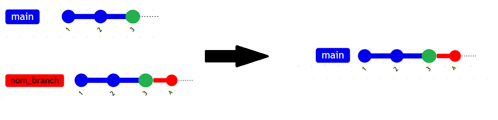

> git ...git initcrée un dossier .git (working tree)
git configgit config --systemgit configgit config --globalgit config --globalgit config --global user.namegit config --global user.name "Ferrier Benjamin"git config --global user.name "Ferrier Benjamin"git config --global user.emailgit config --global user.name "Ferrier Benjamin"git config --global user.email
git config --global core.editor "code --wait"
git status
git add "nom/chemin du fichier"git add --allstage partiel (vscode)
git commit -m "message"
git log
> GitHd: View Entire History
git show "id du commit"
> GitHd: Input ref
> id
git branch nom_branch
git switch nom_branch
git branch
git branch -d nom_branch
git rebase master nom_branch
git rebase --continue
git rebase --abort

git switch master
git merge nom_branch

Les commits sont stockés dans .git/object
git cat-file -p "commit id"
Optimisation: .git\logs